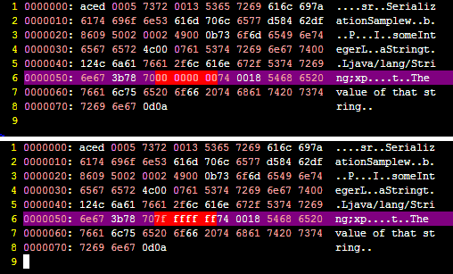

What is object serialization?
What is meant by "object serialization"? Can you please explain it with some examples?
Answer
Serialization is the conversion of an object to a series of bytes, so that the object can be easily saved to persistent storage or streamed across a communication link. The byte stream can then be deserialized - converted into a replica of the original object.
Suggest
You can think of serialization as the process of converting an object instance into a sequence of bytes (which may be binary or not depending on the implementation).
It is very useful when you want to transmit one object data across the network, for instance from one JVM to another.
In Java, the serialization mechanism is built into the platform, but you need to implement the Serializable interface to make an object serializable.
You can also prevent some data in your object from being serialized by marking the attribute as transient.
Finally you can override the default mechanism, and provide your own; this may be suitable in some special cases. To do this, you use one of the hidden features in java.
It is important to notice that what gets serialized is the "value" of the object, or the contents, and not the class definition. Thus methods are not serialized.
Here is a very basic sample with comments to facilitate its reading:
import java.io.*; import java.util.*; // This class implements "Serializable" to let the system know // it's ok to do it. You as programmer are aware of that. public class SerializationSample implements Serializable { // These attributes conform the "value" of the object. // These two will be serialized; private String aString = "The value of that string"; private int someInteger = 0; // But this won't since it is marked as transient. private transient List<File> unInterestingLongLongList; // Main method to test. public static void main( String [] args ) throws IOException { // Create a sample object, that contains the default values. SerializationSample instance = new SerializationSample(); // The "ObjectOutputStream" class has the default // definition to serialize an object. ObjectOutputStream oos = new ObjectOutputStream( // By using "FileOutputStream" we will // Write it to a File in the file system // It could have been a Socket to another // machine, a database, an in memory array, etc. new FileOutputStream(new File("o.ser"))); // do the magic oos.writeObject( instance ); // close the writing. oos.close(); } }
When we run this program, the file "o.ser" is created and we can see what happened behind.
If we change the value of: someInteger to, for example Integer.MAX_VALUE , we may compare the output to see what the difference is.
Here's a screenshot showing precisely that difference:

Can you spot the differences? ;)
There is an additional relevant field in Java serialization: The serialversionUID but I guess this is already too long to cover it.